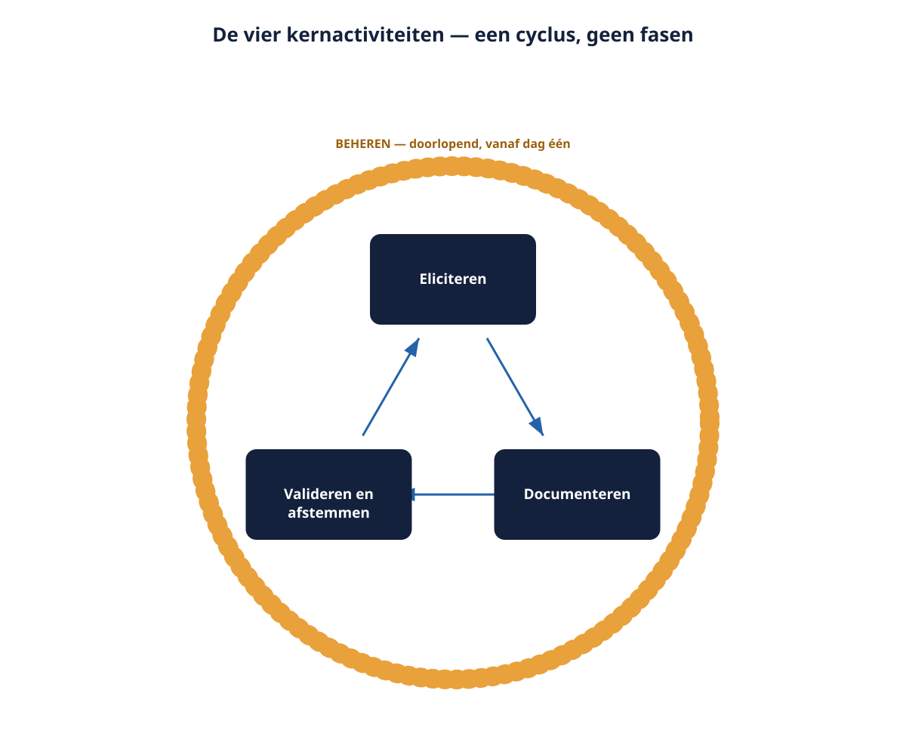

Cursus Requirements engineering · Niveau 1 (CPRE Foundation Level) · Deel 1 van 30
Wat requirements engineering is, en waarom WGP 2.0 erop strandde.
Dit eerste deel begint niet met een definitie maar met een mislukking: het gestrande werkgeversportaal WGP 2.0 bij pensioenuitvoerder Meridiaan, en de zeven bevindingen uit de post-mortem die de rest van dit niveau blijven terugkeren. U leert wat een requirement precies is en wat niet, de vier kernactiviteiten van het vak, en de grenzen van de rol van Ruben Doornbos — Meridiaans eerste requirements engineer, die de bouw van het Nabestaandenloket moet voorbereiden zonder de fouten van WGP 2.0 te herhalen.
9secties
±2uleestijd + werkboek
6controlevragen
7bevindingen geïntroduceerd
Positionering. Deze cursus is een voorbereiding op de CPRE Foundation Level-certificering van IREB en is uitdrukkelijk geen vervanging van het officiële syllabus- en examenmateriaal van IREB, te raadplegen via ireb.org. Alle formuleringen, figuren en werkvormen in dit materiaal zijn van Ductus; studeer voor het examen altijd óók de bron.
Niveau 1: ➊ Wat RE is (hier) → ➋ Principes, systeemgrens en context → ➌ Belanghebbenden en bronnen → ➍ Elicitatie: basistechnieken → ➎ Requirementssoorten en werkproducten → ➏ Formuleringssjabloon → ➐ Modelgebaseerd → ➑ Kwaliteitseisen → ➒ Beheerbasis → ➓ Examentraining + capstone
01
Waar dit deel over gaat
⏱ 10 min
Dit is het eerste deel van niveau 1 van de cursus Requirements engineering, de fundamentmodule op weg naar het CPRE Foundation Level van IREB. Het legt de bodem: wat een requirement is, wat requirements engineering als vak inhoudt, en waarom het project WGP 2.0 bij Meridiaan Pensioen — ondanks bijna twee jaar werk, een extern bouwteam en een functioneel ontwerp van 340 pagina's — nooit in productie is gegaan.
Aan het eind van dit deel kunt u:
uitleggen wat een requirement is en welke drie soorten er zijn;
de vier kernactiviteiten van requirements engineering benoemen en uit elkaar houden;
de rol en de grenzen van de rol van requirements engineer beschrijven;
onderbouwen waarom fouten in requirements onevenredig duur zijn;
een mislukt project analyseren op requirementsoorzaken in plaats van op symptomen.
Dit deel sluit nog geen enkele bevinding uit de post-mortem van WGP 2.0 — het introduceert alle zeven (R1 tot en met R7). Elk volgend deel van dit niveau sluit er één of meer.
02
De casus: een teleurstelling om mee te beginnen
⏱ 12 min
Op 14 november 2025 besloot de directie van Meridiaan Pensioen te stoppen met WGP 2.0, een volledig nieuw werkgeversportaal. Het portaal draait nergens. De directie liet een post-mortem uitvoeren, en het opvallendste daaraan is wat er niet in staat: niet dat de techniek tekortschoot — de externe leverancier bouwde grotendeels wat er gespecificeerd was — en ook niet dat er te weinig is gedocumenteerd. 340 pagina's is meer dan de meeste projecten ooit produceren.
Wat er wel staat, komt neer op zeven bevindingen die allemaal over hetzelfde gaan: er is veel opgeschreven en weinig begrepen.
Nr.
Bevinding uit de post-mortem
Wordt gesloten in
R1
Er is nooit expliciet vastgelegd wat wél en niet tot het systeem behoorde; de scope groeide gedurende de bouw met 41% in functiepunten.
Deel 2
R2
Belangrijke belanghebbenden zijn niet gehoord: de servicedesk is één keer geïnterviewd, de salarisadministrateurs van werkgevers geen enkele keer.
Deel 3
R3
Eisen waren als oplossingen geformuleerd, waardoor het onderliggende doel onzichtbaar bleef en alternatieven nooit zijn overwogen.
Deel 4 en 6
R4
Formuleringen waren meerduidig: "de werkgever kan de aanlevering corrigeren" betekende voor vier afdelingen vier dingen.
Deel 6
R5
Kwaliteitseisen stonden er als bijvoeglijke naamwoorden in: snel, gebruiksvriendelijk, veilig. Niets was toetsbaar.
Deel 8
R6
Alles had dezelfde prioriteit; bij budgetoverschrijding was er geen basis om te kiezen wat eerst moest.
Deel 9
R7
Ruim 400 wijzigingsverzoeken zijn tijdens de bouw verwerkt zonder impactanalyse en zonder spoor terug naar de oorspronkelijke eis.
Deel 9
Figuur 1-1 — de zeven bevindingen R1–R7 uitgezet tegen de delen 1 tot en met 10 waarin ze worden gesloten
Kernzin uit het post-mortemrapport
"Het project is niet gestrand op wat men niet kon bouwen, maar op wat men niet had opgeschreven."
Die zin is bijna waar. Preciezer: het project is gestrand op wat men had opgeschreven zónder dat het gedeeld begrepen, begrensd, toetsbaar, geprioriteerd en herleidbaar was. Dat preciezere onderscheid is het vak dat u in deze cursus leert. Deze zeven bevindingen zijn de rode draad van niveau 1; in deel 10 verdedigt u hoe u ze in een nieuwe aanpak heeft afgedekt.
03
Wat is een requirement?
⏱ 15 min
In het dagelijks spraakgebruik zijn "eis", "wens", "behoefte" en "specificatie" inwisselbaar. In dit vak zijn ze dat niet.
Werkdefinitie (Ductus)
Een requirement is een vastgelegde behoefte of voorwaarde waaraan een systeem of organisatie moet voldoen om waarde te leveren aan een belanghebbende, geformuleerd zó dat vast te stellen is of eraan is voldaan.
Drie elementen daaruit verdienen aandacht. "Van een belanghebbende" — een requirement zonder herkomst is een aanname; bij elk requirement hoort de vraag wie dit vindt, en waarom. "Om waarde te leveren" — een requirement bestaat niet omdat het leuk is, maar omdat er anders iets misgaat. Kunt u die waarde niet benoemen, dan heeft u iets anders in handen: meestal een gewoonte, of een oplossing waarop iemand verliefd is geworden. "Zó dat vast te stellen is of eraan is voldaan" — dit is het scherpst onderscheidende deel. "Het loket moet gebruiksvriendelijk zijn" is een intentie, geen requirement. Pas als u kunt zeggen wanneer het níet gehaald is, heeft u iets waarop u kunt bouwen en testen.
Drie soorten requirements
Functionele requirements beschrijven wat het systeem doet: welke gegevens het verwerkt, welk gedrag het vertoont, welke uitkomsten het levert. Bijvoorbeeld: "het loket registreert een overlijdensmelding met de datum van overlijden, de relatie van de melder tot de overledene en het polisnummer."
Kwaliteitseisen beschrijven hoe goed het systeem dat doet: snelheid, beschikbaarheid, begrijpelijkheid, beveiliging, onderhoudbaarheid. Dit is precies waar WGP 2.0 het liet afweten (bevinding R5); deel 8 gaat er volledig over.
Randvoorwaarden zijn beperkingen waarbinnen de oplossing moet blijven en waarover niet onderhandeld wordt: wetgeving, bestaande systemen, een technologiekeuze, een datum. "Identiteitsdocumenten worden niet als scan opgeslagen" is geen eis aan gedrag, maar aan de speelruimte.
Het onderscheid is geen taxonomisch spelletje. Randvoorwaarden schrappen kan meestal niet. Functionele requirements schrappen kost functionaliteit. Kwaliteitseisen schrappen kost — en dat is het verraderlijke — meestal niets zichtbaars, tot het misgaat.
Figuur 1-2 — driedeling functioneel / kwaliteit / randvoorwaarde met per soort een voorbeeld uit het Nabestaandenloket
Wat een requirement níet is
Geen oplossing. "Een dropdownmenu met de relatie tot de overledene" beschrijft een schermelement. De eis eronder is dat de relatie tot de overledene bekend moet zijn omdat die het recht bepaalt. Wie de oplossing als eis opschrijft, geeft de ontwerpruimte weg zonder het te merken — bevinding R3.
Geen wens zonder eigenaar. "Zou het niet mooi zijn als…" is materiaal, geen requirement — totdat iemand met belang en gezag het onderschrijft.
Geen ontwerpbesluit van de bouwer. Dat de koppeling met KERN asynchroon is, is architectuur. Dat een melding binnen één werkdag in KERN zichtbaar moet zijn, is een requirement.
Controlevragen
Uit Werkboek deel 1, Opdracht 1 — requirement of niet?
1"Na een melding is binnen één werkdag in KERN zichtbaar dat de deelnemer is overleden." Is dit een requirement, en zo ja, welke soort?Toon antwoord
Requirement, functioneel met een tijdsaspect. Toetsbaar en herleidbaar naar het voorkomen van doorbetaling na overlijden. Deelnemers noemen dit vaak een kwaliteitseis vanwege "binnen één werkdag" — beide antwoorden zijn verdedigbaar, maar wat telt is de motivering. De vraag "wat gebeurt er als ik dit schrap?" helpt: schrap de termijn, dan blijft er functionaliteit over, dus het is functioneel met een kwaliteitsaspect.
2"Er komt een dropdown met de relatie tot de overledene." En: "Het systeem is beschikbaar op werkdagen tussen 07:00 en 22:00 met een maximale uitval van 4 uur per maand." Beoordeel beide.Toon antwoord
De dropdown is een oplossing: hij beschrijft een schermelement, niet de behoefte dat de relatie tot de overledene bekend moet zijn omdat die het recht bepaalt. De beschikbaarheidseis is een requirement, kwaliteitseis — meetbaar geformuleerd en het modelantwoord voor wat een goede kwaliteitseis is.
04
De vier kernactiviteiten
⏱ 12 min
Requirements engineering bestaat uit vier activiteiten die elkaar voortdurend afwisselen.
1. Eliciteren — ophalen. Behoeften bestaan zelden in kant-en-klare vorm. Ze zitten in hoofden, in oude systemen, in werkinstructies, in wetgeving, in wat mensen doen zonder het te kunnen benoemen. Eliciteren is actief bovenhalen, niet passief ontvangen. Deel 3 en 4 gaan hierover.
2. Documenteren — vastleggen. In taal, in modellen, of in een combinatie. De vorm is een keuze, geen automatisme: een beslisregel hoort in een tabel, een proces in een procesmodel, een uitzondering in een zin. Deel 5 tot en met 8 gaan hierover.
3. Valideren en afstemmen — kloppend en gedragen maken. Klopt het met de werkelijke behoefte, en zijn de belanghebbenden het eens? Dat zijn twee verschillende vragen, en beide moeten met ja worden beantwoord. Deel 9 gaat hierover.
4. Beheren — bijhouden. Requirements veranderen. Beheren betekent dat u weet welke versie geldt, wat de status is, en wat een wijziging elders raakt. Ook deel 9, en in niveau 2 een volledige module.

Figuur 1-3 — de vier kernactiviteiten als cyclus met de doorlopende activiteit beheren eromheen
Let op de valkuil in de volgorde: deze vier zijn geen fasen. WGP 2.0 behandelde ze wél als fasen — zeven maanden eliciteren en documenteren, dan een handtekening, dan bouwen. Het gevolg was dat elk voortschrijdend inzicht een wijzigingsverzoek werd in plaats van een verbetering. In de praktijk eliciteert u terwijl u documenteert, valideert u terwijl u eliciteert, en beheert u vanaf dag één.
Wat verandert er als je iteratief werkt?
Bij iteratief werken verdwijnen de vier activiteiten niet; ze worden kleiner en frequenter. U eliciteert voor de eerstvolgende brok in plaats van voor het hele systeem. Wat níet verandert: dat u weet wie iets vindt, dat u het toetsbaar formuleert, en dat u bijhoudt wat er geldt. De meest gehoorde misvatting is dat agile werken requirements overbodig maakt — wat het overbodig maakt, is het tegelijk vooraf compleet vastleggen ervan, een heel andere claim. Deel 21 werkt dit uit.
05
De rol van de requirements engineer
⏱ 14 min
Ruben Doornbos is sinds januari 2026 de eerste bij Meridiaan met de titel requirements engineer — acht jaar functioneel beheer en informatieanalyse bij een schadeverzekeraar, aangenomen door directeur Klant & Uitvoering Hetty Landsheer. Dat hij de eerste is, betekent dat hij niet alleen het werk doet, maar de rol ook moet uitleggen.
"Zorgen dat de volgende bouwpoging niet strandt zoals WGP 2.0. En de requirementsfunctie hier opbouwen: werkwijze, afspraken, kwaliteit."
Twee opdrachten, geen mandaat om ze zelf te beslissen.
Wat de rol wél is:
vertaler tussen belanghebbenden die elkaars taal niet spreken;
onderzoeker die vraagt waarom, ook als dat ongemakkelijk is;
bewaker van precisie: dubbelzinnigheid opsporen en wegwerken;
geheugen van het project: waar komt deze eis vandaan, wie vond dit, wat was het alternatief;
degene die conflicten zichtbaar maakt in plaats van ze glad te strijken.
Wat de rol níet is:
besluitvormer over scope, budget of prioriteit;
ontwerper van de oplossing;
notulist die opschrijft wat de hardste stem zegt;
eigenaar van de businessdoelen.
Het motief van deze cursus
De requirements engineer levert feiten, opties en consequenties; het besluit ligt bij anderen. Wie die grens laat vervagen, wordt of machteloos ("hij verzint maar wat") of gevaarlijk ("hij heeft dat blijkbaar besloten"). Dit motief komt terug tot en met de masterproef in deel 10.
De rol grenst aan andere rollen: een business analyst kijkt breder naar het bedrijfsprobleem en de organisatorische oplossing, een product owner beslist over prioriteit en waarde, een architect ontwerpt de structuur, een tester toetst het resultaat. In kleine organisaties valt dit alles op één paar schouders — dan is het des te nuttiger om te weten met welke pet u op dat moment zit.
Controlevragen
Uit Werkboek deel 1, Opdracht 5 — rolgrens
1Wilma (Klantcontact): "Faisal en ik zijn het niet eens over die zelfbediening. Kun jij bepalen wie gelijk heeft?" Wat is een goede reactie van Ruben?Toon antwoord
Dit valt buiten zijn rol, maar hij mag niet wegduiken. Hij beslist niet wie gelijk heeft; hij maakt het conflict expliciet, benoemt wat er achter beide posities zit, en brengt het naar degene die wél beslist. Dit is de kern van deel 9 (belangen achterhalen en voorleggen, niet oplossen).
2Ineke (jurist): "Ik wil dat er in het document komt te staan dat de bewaartermijn zeven jaar is." Wat doet Ruben hiermee?Toon antwoord
Dit ligt op de grens. Als de zeven jaar uit wet of beleid volgt, is het een randvoorwaarde en legt hij die vast met bronvermelding. Als het Inekes eigen interpretatie is, legt hij dát vast als haar standpunt inclusief herkomst. Het verschil tussen "de wet zegt" en "onze jurist vindt" is precies wat een requirements engineer zichtbaar hoort te houden.
06
Waarom requirementsfouten zo duur zijn
⏱ 10 min
Er is een oude vuistregel dat een fout die pas in productie wordt gevonden een veelvoud kost van dezelfde fout in de eisenfase. De exacte factor varieert per onderzoek en per soort systeem — reken er niet mee alsof het een natuurconstante is. Het mechanisme erachter is wel robuust:
Een fout in een requirement plant zich voort in alles wat erop volgt: ontwerp, bouw, testgevallen, documentatie, opleiding, werkinstructies.
Hoe later hij wordt gevonden, hoe meer van dat afgeleide werk opnieuw moet.
Sommige fouten worden helemaal niet gevonden. Het systeem doet dan keurig iets wat niemand nodig had — en dat blijft betaald worden in beheer.
Bij WGP 2.0 zit categorie 3 in de kern: er is functionaliteit gebouwd waarvan tijdens de post-mortem niemand meer wist wie erom had gevraagd (bevinding R7).
Figuur 1-4 — schematische kostencurve met de drie mechanismen: voortplanting, herwerk, onopgemerkte overbodigheid
Er is een tegenkracht die u even serieus moet nemen: eindeloos vooraf specificeren is óók duur, en levert schijnzekerheid. Zeven maanden specificeren heeft WGP 2.0 niet gered. Het antwoord is niet "meer requirements" maar "betere requirements, en op het juiste moment" — wat "beter" is, is het onderwerp van de rest van deze cursus.
07
De opdracht die op Rubens bureau landt
⏱ 14 min
De opdracht voor het Nabestaandenloket is één alinea lang:
"Een online loket waar nabestaanden een overlijden kunnen melden en zien hoe het ervoor staat. Moet snel zijn en makkelijk in gebruik, ook voor oudere mensen. We willen minder telefoontjes. Het moet natuurlijk wel veilig, want het gaat om gevoelige gegevens. En het moet aansluiten op het uitkeringssysteem. Graag voor het einde van het jaar live."
Dit is geen slechte opdracht. Het is een normale opdracht. Er zit veel in: een doel (minder telefoontjes), gebruikers (nabestaanden, ook ouderen), kwaliteitsintenties (snel, makkelijk, veilig), een randvoorwaarde (aansluiten op KERN) en een termijn.
Er zit ook veel níet in. Wat betekent "melden" precies — is dat hetzelfde als "aangifte doen die rechtsgevolg heeft"? Wat is "de status"? Minder telefoontjes dan wat, en hoeveel minder is genoeg? Voor wie is het loket bedoeld als de nabestaande een bewindvoerder heeft? Wat gebeurt er als iemand een overlijden meldt dat niet klopt?
De vaardigheid van dit deel
Zien wat er staat, zien wat er niet staat, en het tweede niet zelf stiekem invullen. Het invullen van gaten met eigen aannames is de meest voorkomende beginnersfout in dit vak, en de schadelijkste — omdat een aanname in de tekst niet te onderscheiden is van een gevalideerde eis.
Vuistregel voor de rest van de cursus: een ongestelde vraag is duurder dan een verkeerd beantwoorde. Een verkeerd antwoord komt aan het licht; een niet-gestelde vraag verstopt zich in de bouw.
Controlevraag
Uit Werkboek deel 1, Opdracht 2 — de opdracht ontleden
1Noem vier vragen die nodig zijn voordat u met deze opdrachtalinea iets kunt, en benoem per vraag aan wie u hem zou stellen.Toon antwoord
Voorbeelden: "Wat betekent 'melden' juridisch — heeft de melding rechtsgevolg?" (Ineke). "Hoeveel telefoontjes zijn het nu, en welk deel is een statusvraag?" (Wilma). "Wie mag melden — alleen nabestaanden, ook uitvaartondernemers, ook bewindvoerders?" (Ineke, Wilma). "Wat betekent 'aansluiten op KERN' — lezen, schrijven, beide, synchroon of niet?" (Milan). Deelnemers vullen bijna altijd minstens één ding zelf in dat er niet staat — bijvoorbeeld dat de nabestaande met DigiD inlogt, of dat het loket de telefonische route vervangt. Geen van die dingen staat in de opdracht; ze zijn vaak redelijke aannames, maar in de tekst niet meer te onderscheiden van wat wél is gezegd.
08
Wat het examen hierover vraagt
⏱ 10 min
Dit deel raakt aan de fundamenten die in het CPRE Foundation Level worden getoetst: het begrip requirement, de soorten, de kernactiviteiten, de rol, en het belang van requirements engineering. In deel 10 volgt de examentraining voor dit niveau.
Twee dingen om nu al te weten:
Het Foundation Level-examen bestaat uit ongeveer 45 meerkeuzevragen in 75 minuten, waarbij vragen 1 tot 3 punten opleveren en u 70% van de punten nodig heeft. Er zijn geen toelatingseisen, en het certificaat verloopt niet.
Alle vragen in deze cursus zijn eigen vragen in de stijl van het examen. Ze zijn geen letterlijke examenvragen en geen vervanging van het officiële syllabus- en oefenmateriaal van IREB.
Let op
Actuele examenvoorwaarden en syllabusversies kunnen wijzigen; controleer die altijd bij de certificeerder voordat u een examen inplant.
09
Terug naar de casus
⏱ 10 min
De zeven bevindingen uit dit deel zijn geen losstaande fouten — ze hangen samen. Wie de citaten uit de interviews van de post-mortem naast de bevindingen legt, ziet dat ze elkaar versterken: een niet-begrensde scope leidt tot een oplossing die als eis wordt vastgelegd, en een oplossing zonder herkenbaar doel is niet meer te prioriteren als het budget krap wordt.
Vooruit naar deel 2. Ruben begint niet met techniek maar met principes: negen fundamentele uitgangspunten van het vak, en het eerste concrete gereedschap om bevinding R1 te sluiten — de systeemgrens en de context van het Nabestaandenloket.
Controlevraag
Uit Werkboek deel 1, Opdracht 3 — de zeven bevindingen ordenen
1Interviewcitaat: "Er stond: de werkgever kan de aanlevering corrigeren. Wij dachten: aanpassen vóór verwerking. Uitkeringen dacht: terugdraaien ná verwerking." Bij welke bevinding hoort dit citaat, en waarom?Toon antwoord
R4 — één formulering, vier interpretaties: dit is ambiguïteit. Ter vergelijking: het citaat "er stond een schermontwerp met een wizard in vier stappen, waarom vier weet ik niet" hoort bij R3, niet bij R1 zoals veel deelnemers denken — het scherpste onderscheid is dat het probleem niet de wizard zelf was, maar dat niemand het doel erachter nog kende. Dat verschil is de kern van deel 4.
Verder naar deel 2
Deel 2 behandelt de negen fundamentele principes van requirements engineering en het eerste concrete gereedschap: de systeemgrens en de context. Daarmee sluit u bevinding R1 — de scope die tijdens WGP 2.0 met 41% groeide zonder dat iemand een grens kon aanwijzen.